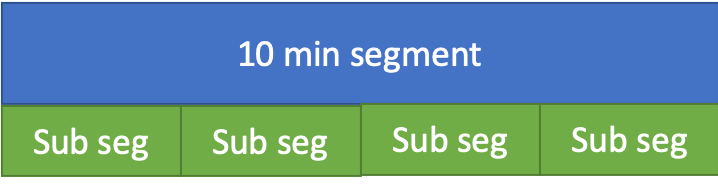
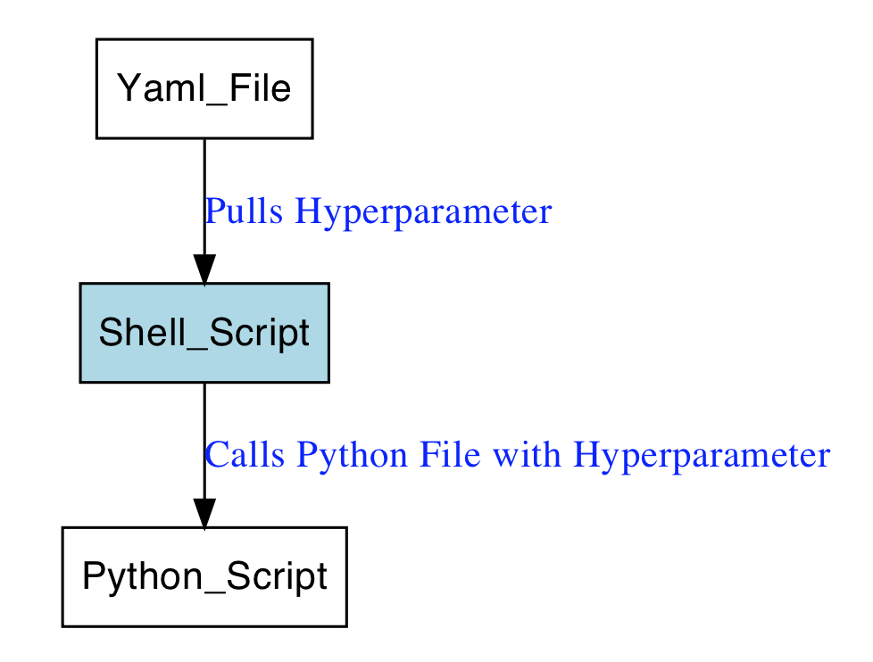

13.1 Winning solution (1st)
The first placed team was a two man show, they present their solution at Kaggle discussion
The team consisted of:
- Four ML experts
- Private team
The team members build a total of 11 models which were blended by using an average of ranked predictions of each individual model. The weight of all models was 1.
Models:
- 11 models in total
- Each weighted 1
13.1.1 Alex / Gilberto models
The two created 4 models which were selected for the final ensemble
13.1.1.1 Pre-processing
For all models of Alex and Gilberto the pre-processing was the same. The code can be found at GitHub
Pre-processing:
- Segmentation of 10min segments into
- non-overlapping
- 30 20s segments
- No filtering
13.1.1.2 Software
The team used Python and several libraries
Software:
- Python
- scikit-learn
- pyRiemann
- xgboost
- mne-python
- pandas
- pyyaml
13.1.1.3 Model 1
The feature generation code is given at GitHub
Model 1 used XGB algorithm and 96 features
96 features:
- normalized log power
- 6 different frequency band (0.1 - 4 ; 4- 8 ; 8 - 15 ; 15 - 30 ; 30 - 90 ; 90 - 170 Hz)
- for each channel
- Power spectral density
- Welch’s method (window of 512 sample, 25% overlap)
- averaged in each band
- normalized by the total power
- taking logarithm.
13.1.1.4 Model 2
Model 2 used XGB algorithm and 336 features
336 features:
- relative log power as described above -with the addition of various measures -mean - min - max - variance - 90th - 10th percentiles)
- auto regressive error coefficient (order 5)
- fractal dimension
- Petrosian
- Higuchi
- Hurst exponent
13.1.1.5 Model 3
Model 3 used XGB algorithm and 576 features Each of the autocorrelation matrices were projected into their respective riemannian tangent space (see (Barachant et al. 2013), this operation can be seen as a kernel operation that unfold the natural structure of symmetric and positive define matrices) and vectorized to produce a single feature vector of 36 item.
576 features:
- auto-correlation matrix
- projected into their respective riemannian tangent space
- kernel operation that unfold the natural structure of symmetric and positive define matrices
- projected into their respective riemannian tangent space
13.1.1.6 Model 4
Model 4 used XGB algorithm and 336 features This feature set is composed by cross-frequency coherence (in the same 6 sub-band as in the relative log power features) of each channels, i.e. the estimation of coherence is achieved between pairs of frequency of the same channel instead to be between pairs of channels for each frequency band. This produce set of 6x6 coherence matrices, that are then projected in their tangent space and vectorized.
336 features:
- cross-frequency coherence
- projected in their tangent space and vectorized
13.1.2 Feng models
Feng created 4 models which were selected for the final ensemble. Total training time (including feature extraction) is estimated to less than 6 hours for these 4 models on my 8 GB RAM MacBook Pro.
13.1.2.1 Pre-processing
The pre-processing was the same for all models
Pre-processing:
- Butterworth filter (5th order with 0.1-180 HZ cutoff )
- segmentation of 10min
-non-overlapping
- 30s windows
13.1.2.2 Features
Two different sets of features were produced and used in different combinations for the models. The script to generate the features can be found at GitHub
The parameters of the feature generation is organized in the json file kaggle_SETTINGS.json
Feature set 1:
- bands: (0.1–4 Hz), theta (4–8 Hz), alpha (8–12 Hz), beta (12–30 Hz), low gamma (30–70 Hz) and high gamma (70–180Hz)
- standard deviation
- average spectral power
Feature set 2:
- correlation
- time domain
- frequency domain
- upper triangle values of correlation matrices
- eigenvalues
13.1.2.3 Models
The models used different algorithms and either feature set 1 or both feature sets
Model 1: XGB with feature 1
Model 2: KNN with feature1
Model 3: KNN with feature1+feature2
Model 4: Logistic Regression with L2 penalty with feature1+feature2
13.1.3 Andriy models
Andriy created 3 models which were selected for the final ensemble
13.1.3.1 Pre-processing
For all models of Andriy the pre-processing was the same
Pre-processing:
- demeaning the EEG signal
- filtering of the EEG signal between 0.5 and 128 Hz with a notch filter set at 60Hz
- downsampling to 256 Hz
- segmentation of the 10 minutes segment
- non-overlapping
- 30 seconds segment.
13.1.3.2 Features
Andriy created 1965 features from which he choose by computing the feature importance using an XGB classifier.
The univarant features have been previously used in several EEG applications, including seizure detection in newborns and adults (Temko, Thomas, Marnane, Lightbody, and Boylan 2011a) and (Temko, Thomas, Marnane, Lightbody, and Boylan 2011b)
per-channel feature (univariate):
- 111 feature per channel => 11*16 = 1776
- peak frequency of spectrum
- spectral edge frequency (80%, 90%, 95%)
- fine spectral log-filterbank energies in 2Hz width sub-bands (0-2Hz, 1-3Hz, …30-32Hz)
- coarse log filterbank energies in delta, theta, alpha, beta, gamma frequency bands
- normalised FBE in those sub-bands
- wavelet energy
- curve length
- Number of maxima and minima
- RMS amplitude
- Hjorth parameters
- Zero crossings (raw epoch, Δ, ΔΔ)
- Skewness
- Kurtosis
- Nonlinear energy
- Variance (Δ, ΔΔ)
- Mean frequency
- band-width
- Shannon entropy
- Singular value decomposition entropy
- Fisher information
- Spectral entropy
- Autoregressive modelling error (model order 1-9)These multivariate were extracted for the five conventional EEG sub-bands (delta, theta, alpha, beta, gamma) for 6 different montages (horizontal, vertical, diagonal, etc
cross-channel features (multivariate):
- 180 features
- lag of maximum cross correlation
- correlation
- brain asymmetry index
- brain synchrony index
- coherence
- frequency of maximum coherence.
13.1.3.3 Models
Out of the 1965 features listed above the first model computed the feature importance which was then used to select features for model 2 and 3
Model 1: All features were used in a bagged XGB classifier (XGB).
Model 2: Linear SVM was trained with top 300 features (SVM)
Model 3: GLM was trained with top 200 features (Glmnet)
13.1.4 Code on GitHub
A detailed explanation of solution and code is given at GitHub
13.1.4.1 Alex / Gilberto code
The code of Alex / Gilberto is analyzed below
13.1.4.1.1 Pre-processing
For all models of Alex and Gilberto the pre-processing was the same. The code can be found at GitHub
13.1.4.1.2 Feature generation
The feature generation code is given at GitHub
13.1.4.1.3 Models
They use the XGB algorithm, the XGB hyperparameters are set in .yml files as follows

Yaml file:
output: Alex_Gilberto_autocorrmat_TS_XGB
datasets:
- autocorrmat
n_jobs: 1
safe_old: True
imports:
models:
- CoherenceToTangent
xgboost:
- XGBClassifier
sklearn.ensemble:
- BaggingClassifier
model:
- CoherenceToTangent:
tsupdate: False
metric: '"identity"'
n_jobs: 8
- BaggingClassifier:
max_samples: 0.99
max_features: 0.99
random_state: 666
n_estimators: 4
base_estimator: XGBClassifier(n_estimators=500, learning_rate=0.01, max_depth=4, subsample=0.50, colsample_bytree=0.50, colsample_bylevel=1.00, min_child_weight=2, seed=42)The models were than called within a shell script:
13.1.4.2 Feng code
The code of Feng is analyzed below
13.1.4.2.1 Pre-processing
The scripts for pre-processing are given at GitHub
13.1.4.2.2 Features
The script to generate the features can be found at GitHub
The parameters of the feature generation is organized in the json file kaggle_SETTINGS.json
13.1.4.2.3 Models
The code for the GLM model:
def train(subject, data_path, plot=False):
d = load_train_data_lasso(data_path, subject)
x, y = d['x'], d['y']
print 'n_preictal', np.sum(y)
print 'n_inetrictal', np.sum(1-y)
n_channels = x.shape[1]
n_fbins = x.shape[2]
x, y = reshape_data(x, y)
x[np.isneginf(x)] = 0
data_scaler = StandardScaler()
x = data_scaler.fit_transform(x) ## Normalizaiton
logreg = linear_model.LogisticRegression(penalty='l2',C=0.6)
logreg.fit(x, y)
return logreg, data_scalerThe code for the KNN model:
def train(subject,data_path):
d=load_train_data_knn(data_path,subject)
x,y=reshape_data(d['x'],d['y'])
x[np.isneginf(x)] = 0
x[np.isnan(x)]=0
data_scaler = StandardScaler()
x = data_scaler.fit_transform(x)
clf = KNeighborsClassifier(n_neighbors=40, weights='distance',metric='manhattan', n_jobs=-1)
clf.fit(x, y)
return clfThe code for the XGB model:
params = {
"objective": "binary:logistic",
"booster" : "gbtree",
"eval_metric": "auc",
"eta": 0.22,##0.22
"max_depth": 3,
"subsample": 0.80,
"colsample_bytree": 0.78,
"silent": 1,
}
def train(subject,data_path,params):
d=load_train_data_xgb(data_path,subject)
x,y=reshape_data(d['x'],d['y'])
dtrain=xgb.DMatrix(x,y)
gbm=xgb.train(params,dtrain,num_boost_round=500,verbose_eval=20)
return gbm
13.1.4.3 Andriy code
The code of Andriy is analyzed below
13.1.4.3.1 Pre-processing
Pre-processing is done in Matlab scripts on GitHub
13.1.4.3.2 Feature generation
The feature generation is also done in 4 Matlab scripts at GitHub
- FE_main_AR.m
- FE_main_CONN.m
- FE_main_CSP_AR.m
- FE_main_F.m
13.1.4.3.3 Models
The files for the models are:
-GLM model - mod_glmnet_5_3.R
Creates SVM model and submission
-SVM model -mod_svm_5_7.R
-XGB model - mod_xgb_7_5.R
Code for the XGB model
param <- list( objective = "binary:logistic",
booster = "gbtree",
eval_metric = "auc",
eta = 0.3,
max_depth = 3,
subsample = 0.8,
colsample_bytree = 1,
num_parallel_tree = 2
)
cat('model1...')
set.seed(1234)
model1 <- xgb.train( params = param,
data = dtrain,
nrounds = 1000)
importance <- xgb.importance(model = model1)
References
Barachant, Alexandre, Stéphane Bonnet, Marco Congedo, and Christian Jutten. 2013. “Classification of Covariance Matrices Using a Riemannian-Based Kernel for Bci Applications.” Neurocomputing 112: 172–78.
Temko, A, E Thomas, W Marnane, G Lightbody, and G Boylan. 2011a. “EEG-Based Neonatal Seizure Detection with Support Vector Machines.” Clinical Neurophysiology 122 (3): 464–73.
Temko, A, E Thomas, W Marnane, G Lightbody, and GB Boylan. 2011b. “Performance Assessment for Eeg-Based Neonatal Seizure Detectors.” Clinical Neurophysiology 122 (3): 474–82.